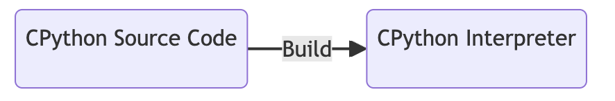

5. 구성과 입력#
이번 챕터를 통해 다음 내용을 배울 수 있습니다.
CPython 인터프리터의 빌드부터 파이썬 코드 실행까지의 과정에 대한 코드 레벨의 이해
인터프리터의 configuration 과정
인터프리터의 입력에서 모듈을 만드는 과정
5.0 CPython Interpreter Execution Overview#
인터프리터가 실행되는 흐름은 다음과 같습니다. 이 때, 세 가지 요소가 중요합니다.
실행할 모듈 (A module to execute)
변수 등을 저장할 상태 (A state to hold information such as variables)
활성화된 옵션 등의 구성 (A configuration, such as which options are enabled)
세 가지 요소로 넘어가기 전에, 인터프리터가 실행되는 과정에 대한 이해를 높여보겠습니다. 인터프리터의 생성부터 실행까지의 과정을 코드 레벨로 정리하면 다음과 같습니다.
1. 인터프리터 생성 (= 3.컴파일하기)

책에서는 CPython Source Code를 compile 해서 인터프리터를 생성한다고 표현하기도 하고, build한다고도 표현합니다. Build 과정에는 Compile 과정이 포함되어 있기 때문에, 굳이 구분하지 않고 혼용해서 사용하는 것으로 보입니다.
또한, 빌드 결과물인 CPython Binary와 executable interpreter(작동하는 인터프리터)를 같은 용어로 사용하고 있습니다. CPython Interpreter로 이해해도 될 듯 합니다. “CPython 소스 코드를 빌드해서 파이썬 인터프리터를 생성했구나” 라고 생각하면 되겠습니다.
인터프리터 파일은 윈도우, 맥 모두 python.exe 파일로 생성됩니다. 확장자는 Makefile의
BUILDEXE변수로 변경할 수 있습니다.
# Executable suffix (.exe on Windows and Mac OS X)
EXE=
BUILDEXE= .exe
인터프리터를 빌드할 때 사용되는 소스 코드는 Programs/python.c 입니다. 따라서, 인터프리터를 실행할 때 시작되는 entrypoint file은 Programs/python.c 입니다.
# Default target
all: build_all
build_all: check-clean-src $(BUILDPYTHON) oldsharedmods sharedmods gdbhooks \
Programs/_testembed python-config
# Build the interpreter
$(BUILDPYTHON): Programs/python.o $(LIBRARY) $(LDLIBRARY) $(PY3LIBRARY) $(EXPORTSYMS)
$(LINKCC) $(PY_CORE_LDFLAGS) $(LINKFORSHARED) -o $@ Programs/python.o $(BLDLIBRARY) $(LIBS) $(MODLIBS) $(SYSLIBS)
Programs/python.o: $(srcdir)/Programs/python.c
$(MAINCC) -c $(PY_CORE_CFLAGS) -o $@ $(srcdir)/Programs/python.c
2. 인터프리터 시작: 운영 체제에 따른 main 선택 (./python.exe)
Programs/python.c
/* Minimal main program -- everything is loaded from the library */
#include "Python.h"
#ifdef MS_WINDOWS
int
wmain(int argc, wchar_t **argv)
{
return Py_Main(argc, argv);
}
#else
int
main(int argc, char **argv)
{
return Py_BytesMain(argc, argv); // macOS
}
#endif
macOS는
Py_BytesMain함수로 진입합니다.
3. Py_BytesMain: argument 포함시키기
Modules/main.c: L723-L732
int
Py_BytesMain(int argc, char **argv)
{
_PyArgv args = {
.argc = argc,
.use_bytes_argv = 1,
.bytes_argv = argv,
.wchar_argv = NULL};
return pymain_main(&args);
}
4. pymain_main: 인터프리터 전체 동작 흐름
Modules/main.c: L695-L708
static int
pymain_main(_PyArgv *args)
{
PyStatus status = pymain_init(args);
if (_PyStatus_IS_EXIT(status)) {
pymain_free();
return status.exitcode;
}
if (_PyStatus_EXCEPTION(status)) {
pymain_exit_error(status);
}
return Py_RunMain();
}
pymain_init()의 리턴인PyStatus는OK,ERROR,EXIT3가지 타입을 갖습니다.Include/cpython/initconfig.h: L10-L19
typedef struct { enum { _PyStatus_TYPE_OK=0, _PyStatus_TYPE_ERROR=1, _PyStatus_TYPE_EXIT=2 } _type; const char *func; const char *err_msg; int exitcode; } PyStatus;
타입이
OK인 경우에만Py_RunMain()함수가 실행됩니다.
5. pymain_init: runtime configuration 설정 (5.1 ~ 5.2)
Modules/main.c: L33-L75
static PyStatus
pymain_init(const _PyArgv *args)
{
PyStatus status;
status = _PyRuntime_Initialize();
if (_PyStatus_EXCEPTION(status)) {
return status;
}
PyPreConfig preconfig;
PyPreConfig_InitPythonConfig(&preconfig);
status = _Py_PreInitializeFromPyArgv(&preconfig, args);
if (_PyStatus_EXCEPTION(status)) {
return status;
}
PyConfig config;
PyConfig_InitPythonConfig(&config);
/* pass NULL as the config: config is read from command line arguments,
environment variables, configuration files */
if (args->use_bytes_argv) {
status = PyConfig_SetBytesArgv(&config, args->argc, args->bytes_argv);
}
else {
status = PyConfig_SetArgv(&config, args->argc, args->wchar_argv);
}
if (_PyStatus_EXCEPTION(status)) {
goto done;
}
status = Py_InitializeFromConfig(&config);
if (_PyStatus_EXCEPTION(status)) {
goto done;
}
status = _PyStatus_OK();
done:
PyConfig_Clear(&config);
return status;
}
6. Py_RunMain: 파이썬 코드 실행 (5.3)
Modules/main.c: L672:L692
int
Py_RunMain(void)
{
int exitcode = 0;
pymain_run_python(&exitcode);
if (Py_FinalizeEx() < 0) {
/* Value unlikely to be confused with a non-error exit status or
other special meaning */
exitcode = 120;
}
pymain_free();
if (_Py_UnhandledKeyboardInterrupt) {
exitcode = exit_sigint();
}
return exitcode;
}
5.1 Configuration State (구성 상태)#
파이썬 코드를 실행하기 전에, CPython 런타임은 먼저 configuration of the runtime과 user-provided options을 설정합니다.
Configuration of the runtime은 세 부분으로 나뉘어 있습니다. (PEP 587).
PyPreConfig, used for preinitialization configurationPyConfig, user for the runtime configurationThe compiled(=build) configuration of the CPython Interpreter
Preinitialization Configuration#
preinitialization configuration은 operating system 혹은 user environment와 관련된 설정이기 때문에, runtime configuration과 구분됩니다.
다음은 PyPreConfig의 세 가지 주요 기능입니다.
[1] 파이썬 메모리 할당자(memory allocator) 설정하기
[2] LC_CTYPE 로캘(locale)을 system 또는 user-preferred 로캘로 설정하기
⭐ 로캘(Locale)이란?
특정 지역, 국가, 또는 문화권에서 사용하는 언어, 통화, 날짜 및 시간 형식과 같은 지역 설정을 의미함.
로캘의 정보는 일반적으로 언어 코드와 국가/지역 코드의 조합으로 표현된다. (ex>
en-US는 미국 영어,ko-KR은 대한민국 한국어를 나타냄)
[3] UTF-8 모드 설정하기 (PEP 540)
⭐ 인코딩
파이썬은 3.7부터 로캘 설정과 상관 없이 UTF-8을 기본 인코딩으로 사용함
PyPreConfig 구조체는 다음과 같은 int 타입 필드들을 포함합니다.
allocator:PYMEM_ALLOCATOR_MALLOC같은 값을 사용해서 메모리 할당자를 선택합니다../configure —help를 실행해 메모리 할당자에 대한 추가 정보를 얻을 수 있습니다.configure_locale: LC_CTYPE 로캘을 user-preferred 로캘로 설정합니다. 0으로 설정하면coerce_c_locale과coerce_c_locale_warn을 0으로 설정합니다.coerce_c_locale: 2로 설정하면 C 로캘을 강제로 적용합니다. 1로 설정하면 LC_CTYPE을 읽은 후 강제로 적용할지 결정합니다.coerce_c_locale_warn: 0이 아니면 C 로캘이 강제로 적용될 때 경고가 발생합니다.dev_mode: 개발 모드를 활성화합니다.isolated: 격리 모드를 활성화합니다. sys.path에 스크립트 디렉토리와 사용자의 사이트 패키지 디렉토리가 포함되지 않습니다.legacy_window_fs_encoding(윈도우 전용): 0이 아니면 UTF-8 모드를 비활성화하고, 파이썬 파일 시스템 인코딩을 mbcs로 설정합니다.parse_argv: 0이 아니면 명령줄 인자(command-line arguments)를 사용합니다.use_environment: 0보다 큰 값이면 환경 변수를 사용합니다.utf8_mode: 0이 아니면 UTF-8 모드를 활성화합니다.-
(참고) PyPreConfig 구조체
Include/cpython/initconfig.h: L45-L125
/* --- PyPreConfig ----------------------------------------------- */ typedef struct { int _config_init; /* _PyConfigInitEnum value */ /* Parse Py_PreInitializeFromBytesArgs() arguments? See PyConfig.parse_argv */ int parse_argv; /* If greater than 0, enable isolated mode: sys.path contains neither the script's directory nor the user's site-packages directory. Set to 1 by the -I command line option. If set to -1 (default), inherit Py_IsolatedFlag value. */ int isolated; /* If greater than 0: use environment variables. Set to 0 by -E command line option. If set to -1 (default), it is set to !Py_IgnoreEnvironmentFlag. */ int use_environment; /* Set the LC_CTYPE locale to the user preferred locale? If equals to 0, set coerce_c_locale and coerce_c_locale_warn to 0. */ int configure_locale; /* Coerce the LC_CTYPE locale if it's equal to "C"? (PEP 538) Set to 0 by PYTHONCOERCECLOCALE=0. Set to 1 by PYTHONCOERCECLOCALE=1. Set to 2 if the user preferred LC_CTYPE locale is "C". If it is equal to 1, LC_CTYPE locale is read to decide if it should be coerced or not (ex: PYTHONCOERCECLOCALE=1). Internally, it is set to 2 if the LC_CTYPE locale must be coerced. Disable by default (set to 0). Set it to -1 to let Python decide if it should be enabled or not. */ int coerce_c_locale; /* Emit a warning if the LC_CTYPE locale is coerced? Set to 1 by PYTHONCOERCECLOCALE=warn. Disable by default (set to 0). Set it to -1 to let Python decide if it should be enabled or not. */ int coerce_c_locale_warn; #ifdef MS_WINDOWS /* If greater than 1, use the "mbcs" encoding instead of the UTF-8 encoding for the filesystem encoding. Set to 1 if the PYTHONLEGACYWINDOWSFSENCODING environment variable is set to a non-empty string. If set to -1 (default), inherit Py_LegacyWindowsFSEncodingFlag value. See PEP 529 for more details. */ int legacy_windows_fs_encoding; #endif /* Enable UTF-8 mode? (PEP 540) Disabled by default (equals to 0). Set to 1 by "-X utf8" and "-X utf8=1" command line options. Set to 1 by PYTHONUTF8=1 environment variable. Set to 0 by "-X utf8=0" and PYTHONUTF8=0. If equals to -1, it is set to 1 if the LC_CTYPE locale is "C" or "POSIX", otherwise it is set to 0. Inherit Py_UTF8Mode value value. */ int utf8_mode; /* If non-zero, enable the Python Development Mode. Set to 1 by the -X dev command line option. Set by the PYTHONDEVMODE environment variable. */ int dev_mode; /* Memory allocator: PYTHONMALLOC env var. See PyMemAllocatorName for valid values. */ int allocator; } PyPreConfig;
Runtime Configuration Data Structure#
Configuration의 두 번째 단계는 runtime configuration이다. PyConfig(runtime configuration 구조체)는 다음과 같은 값들을 포함합니다.
Runtime flags for modes like
debugandoptimizedThe mode of execution, such as a
script file,stdin, ormodule-X option 으로 설정 가능한 확장 옵션(extended options)
-X opt : set implementation-specific option. The following options are available: -X faulthandler: enable faulthandler -X oldparser: enable the traditional LL(1) parser; also PYTHONOLDPARSER -X showrefcount: output the total reference count and number of used memory blocks when the program finishes or after each statement in the interactive interpreter. This only works on debug builds -X tracemalloc: start tracing Python memory allocations using the tracemalloc module. By default, only the most recent frame is stored in a traceback of a trace. Use -X tracemalloc=NFRAME to start tracing with a traceback limit of NFRAME frames -X importtime: show how long each import takes. It shows module name, cumulative time (including nested imports) and self time (excluding nested imports). Note that its output may be broken in multi-threaded application. Typical usage is python3 -X importtime -c 'import asyncio' -X dev: enable CPython's "development mode", introducing additional runtime checks which are too expensive to be enabled by default. Effect of the developer mode: * Add default warning filter, as -W default * Install debug hooks on memory allocators: see the PyMem_SetupDebugHooks() C function * Enable the faulthandler module to dump the Python traceback on a crash * Enable asyncio debug mode * Set the dev_mode attribute of sys.flags to True * io.IOBase destructor logs close() exceptions -X utf8: enable UTF-8 mode for operating system interfaces, overriding the default locale-aware mode. -X utf8=0 explicitly disables UTF-8 mode (even when it would otherwise activate automatically) -X pycache_prefix=PATH: enable writing .pyc files to a parallel tree rooted at the given directory instead of to the code tree -X int_max_str_digits=number: limit the size of int<->str conversions. This helps avoid denial of service attacks when parsing untrusted data. The default is sys.int_info.default_max_str_digits. 0 disables.
Environment variables for runtime settings
Setting Runtime Configuration with the Command Line#
파이썬은 다양한 명령줄 인터페이스 옵션(command-line interface options)을 제공합니다. 대표적인 예시로 verbose mode가 있습니다. 주로 CPython을 디버깅하려는 개발자들을 위한 모드입니다.
-v 플래그로 verbose mode를 활성화하면, 파이썬은 모듈을 로딩할 때마다 화면에 메시지를 출력합니다.
$ ./python -v -c "print('hello world')"
# installing zipimport hook
import zipimport # builtin
# installed zipimport hook
...
Runtime Configuration을 설정하는 방법은 다양하기 때문에, 우선순위가 지정되어 있습니다. 다음은 verbose mode 설정에 대한 우선순위입니다.
config→verbose의 기본값은 -1로 소스 코드에 하드코딩되어 있습니다.
PYTHONVERBOSE환경 변수를 config→verbose를 설정하는데 사용합니다.환경 변수가 없으면 기본값인 -1을 사용합니다.
Python/initconfig.c의
config_parse_cmdline()은 명시된 명령줄 플래그를 사용해 모드를 설정합니다._Py_GetGlobalVariableAsDict()가 값을 전역 변수Py_VerboseFlag로 복사합니다.
모든 PyConfig 값에는 같은 순서와 우선순위가 적용됩니다.
Viewing Runtime Flags#
CPython 인터프리터는 많은 runtime flags가 있습니다. 플래그는 CPython의 특정 동작을 제어하는데 사용되는 고급 기능이다. 파이썬 세션 중에, sys.flags 네임드 튜플을 통해 runtime flags에 접근할 수 있습니다.
플래그 사용 X
./python.exe Python 3.9.19+ (heads/3.9:a04a0f6585, Mar 25 2024, 08:21:31) [Clang 15.0.0 (clang-1500.3.9.4)] on darwin Type "help", "copyright", "credits" or "license" for more information. >>> import sys; sys.flags sys.flags(debug=0, inspect=0, interactive=0, optimize=0, dont_write_bytecode=0, no_user_site=0, no_site=0, ignore_environment=0, verbose=0, bytes_warning=0, quiet=0, hash_randomization=1, isolated=0, dev_mode=False, utf8_mode=0, int_max_str_digits=-1)
-X dev 플래그 사용
./python.exe -X dev Python 3.9.19+ (heads/3.9:a04a0f6585, Mar 25 2024, 08:21:31) [Clang 15.0.0 (clang-1500.3.9.4)] on darwin Type "help", "copyright", "credits" or "license" for more information. >>> import sys; sys.flags sys.flags(debug=0, inspect=0, interactive=0, optimize=0, dont_write_bytecode=0, no_user_site=0, no_site=0, ignore_environment=0, verbose=0, bytes_warning=0, quiet=0, hash_randomization=1, isolated=0, dev_mode=True, utf8_mode=0, int_max_str_digits=-1)
dev_mode가True로 변경됨.
-X dev -X utf8 플래그 사용
./python.exe -X dev -X utf8 Python 3.9.19+ (heads/3.9:a04a0f6585, Mar 25 2024, 08:21:31) [Clang 15.0.0 (clang-1500.3.9.4)] on darwin Type "help", "copyright", "credits" or "license" for more information. >>> import sys; sys.flags sys.flags(debug=0, inspect=0, interactive=0, optimize=0, dont_write_bytecode=0, no_user_site=0, no_site=0, ignore_environment=0, verbose=0, bytes_warning=0, quiet=0, hash_randomization=1, isolated=0, dev_mode=True, utf8_mode=1, int_max_str_digits=-1)
utf8_mode가1로 변경됨.
-X dev -q 플래그 사용
./python.exe -X dev -q >>> import sys; sys.flags sys.flags(debug=0, inspect=0, interactive=0, optimize=0, dont_write_bytecode=0, no_user_site=0, no_site=0, ignore_environment=0, verbose=0, bytes_warning=0, quiet=1, hash_randomization=1, isolated=0, dev_mode=True, utf8_mode=0, int_max_str_digits=-1)
-q(=quiet) 모드라서 파이썬 버전이 출력되지 않음.quiet이1로 변경됨.
5.2 Build Configuration (빌드 구성)#
Runtime configuration을 Include/cpython/initconfig.h에 정의하듯이, build configuration은 root 디렉토리의 pyconfig.h에서 정의합니다. 이 파일은 ./configure 단계 (macOS or Linux)나, build.bat 실행 (Windows) 중에 자동으로 생성됩니다.
다음 명령어로 build configuration을 확인할 수 있습니다.
./python.exe -m sysconfigPlatform: "macosx-14.4-arm64" Python version: "3.9" Current installation scheme: "posix_prefix" Paths: data = "/usr/local" include = "/Users/donghee/Projects/cpython-internals/cpython/Include" platinclude = "/Users/donghee/Projects/cpython-internals/cpython" platlib = "/usr/local/lib/python3.9/site-packages" platstdlib = "/usr/local/lib/python3.9" purelib = "/usr/local/lib/python3.9/site-packages" scripts = "/usr/local/bin" stdlib = "/usr/local/lib/python3.9" Variables: ABIFLAGS = "d" AC_APPLE_UNIVERSAL_BUILD = "0" AIX_BUILDDATE = "0" AIX_GENUINE_CPLUSPLUS = "0" ...
build configuration은 5가지의 key로 구성되어 있습니다.
Platform
Python version
Current installation scheme
Paths
Variables
(참고) CPython을 컴파일 하는 과정 중,
./configure스크립트를 실행할 때 포함시켰던 옵션들을 확인할 수 있습니다.CPPFLAGS,LDFLAGS는 build configuration의 Variables에 포함되어 있습니다.... CONFIGURE_CPPFLAGS = "-I/opt/homebrew/opt/zlib/include -I/opt/homebrew/opt/xz/include" ... CONFIGURE_LDFLAGS = "-L/opt/homebrew/opt/zlib/lib -L/opt/homebrew/opt/xz/lib" ...
(참고)
error: 'lzma.h' file not found에러로 인해./configure스크립트를 실행할 때,xz라이브러리를 추가하고 빌드했기 때문에xz라이브러리에 대한 경로가 포함되어 있습니다.사용했던 스크립트
# xz 경로 추가 CPPFLAGS="-I$(brew --prefix zlib)/include -I$(brew --prefix xz)/include" \ LDFLAGS="-L$(brew --prefix zlib)/lib -L$(brew --prefix xz)/lib" \ ./configure --with-openssl=$(brew --prefix openssl) --with-pydebug # 빌드 make -j2 -s
Build configuration 항목들은 컴파일 시에(=CPython Interpreter 생성할 때) 결정되는 값으로, 바이너리에 링크할 추가 모듈 선택에 사용됩니다. 예를 들어 디버거와 계측(instrumentation) 라이브러리, 메모리 할당자는 모두 컴파일 시 결정됩니다.
세 단계의 구성(Build Configuration, PyPreConfig, PyConfig)을 모두 완료하면, CPython Interpreter는 입력된 텍스트를 코드로 실행할 수 있게 됩니다.
5.3 입력에서 모듈 만들기#
코드를 실행하려면 먼저 입력을 모듈로 컴파일해야 합니다.
입력방식
로컬 파일과 패키지
메모리 파이프나 stdin 같은 I/O 스트림
문자열
이렇게 읽어 들인 입력은 파서를 거쳐 컴파일러로 전달 됩니다. 이렇게 유연한 입력 방식을 제공하기 위해 CPython은 CPython 소스 코드의 상당 분량을 파서의 입력 처리에 사용합니다.
연관된 소스 파일 목록#
Lib > runpy.py : 파이썬 모듈을 임포트 하고 실행하는 표준 라이브러리 모듈
Modules > main.c : 파일이나 모듈, 입력 스트림 같은 외부 코드 실행을 감싸는 함수
Programs > python.c : 윈도우나, 리눅스, macOS에서 Python의 진입점. 위의
main.c를 감싸는 역할만 맡음.Python > pythonrun.c : 명령줄 입력을 처리하는 내부 C API를 감싸는 함수
입력과 파일 읽기#
CPython은 런타임 구성과 명령줄 인자가 준비되면 실행할 코드를 불러옵니다.
이 작업은
Modules > main.c > pymain_main()에서 실행됩니다.CPython은 어떤 파이썬 코드를 실행할지 결정하고 이 코드를 메모리에 로드합니다.
다음으로 CPython은 불러온 코드를 새로 생성된
PyConfig인스턴스에 설정된 옵션들과 함께 실행됩니다.PyConfig인스턴스는 CPython 인터프리터가 실행될 때 사용되는 설정들을 담고 있으며, 이 설정들은 파이썬 실행 환경을 조정하는데 사용됩니다.
명령줄 문자열 입력#
⭐ -c 옵션을 사용해 명령줄에서 파이썬 애플리케이션을 실행하는 경우
python -c “print(2 ** 2)”
Modules > main.c > pymain_run_command()
static int
pymain_run_command(wchar_t *command, PyCompilerFlags *cf)
{
PyObject *unicode, *bytes;
int ret;
unicode = PyUnicode_FromWideChar(command, -1);
if (unicode == NULL) {
goto error;
}
if (PySys_Audit("cpython.run_command", "O", unicode) < 0) {
return pymain_exit_err_print();
}
bytes = PyUnicode_AsUTF8String(unicode);
Py_DECREF(unicode);
if (bytes == NULL) {
goto error;
}
ret = PyRun_SimpleStringFlags(PyBytes_AsString(bytes), cf);
Py_DECREF(bytes);
return (ret != 0);
error:
PySys_WriteStderr("Unable to decode the command from the command line:\n");
return pymain_exit_err_print();
}
Modules > main.c에서 pymain_run_command()가 실행되며 -c로 전달된 명령은 C의 wchar_t* 타입 인자로 함수에 전달됩니다.
wchar_t* 타입은 UTF-8 문자를 저장할 수 있기 때문에 CPython에서 저수준 유니코드 데이터를 저장하는 타입으로 사용됩니다.
PyUnicode_FromWideChar()를 이용해 wchar_t*를 파이썬 유니코드 문자열 객체로 변환할 수 있습니다.
pymain_run_command()는 파이썬 바이트열 객체를 PyRun_SimpleStringFlags()로 넘겨서 실행합니다.
PyRun_SimpleStringFlags()는 문자열을 파이썬 모듈로 변환하고 실행합니다.
파이썬 모듈을 독립된 모듈로 실행하려면 main 진입점이 필요하기 때문에 PyRun_SimpleStringFlags()가 진입점을 자동으로 추가합니다.
또한 PyRun_SimpleStringFlags()는 가짜 파일 이름을 만들고 파이썬 파서를 실행해서, 문자열에서 추상 구문 트리(abstract syntax tree, AST)를 생성해 모듈로 반환한다.
로컬 모듈 입력#
⭐ -m 옵션을 사용해 모듈을 실행하는 경우
python -m unittest
-m 플래그는 모듈 패키지의 진입점(main) 을 실행합니다.
임포트 라이브러리(importlib)의 검색 매커니즘 덕분에 특정 모듈의 파일 시스템 위치를 기억할 필요는 없습니다.
Lib > runpy.py > _get_module_details()
def _get_module_details(mod_name, error=ImportError): if mod_name.startswith("."): raise error("Relative module names not supported") pkg_name, _, _ = mod_name.rpartition(".") if pkg_name: # Try importing the parent to avoid catching initialization errors try: __import__(pkg_name) except ImportError as e: # If the parent or higher ancestor package is missing, let the # error be raised by find_spec() below and then be caught. But do # not allow other errors to be caught. if e.name is None or (e.name != pkg_name and not pkg_name.startswith(e.name + ".")): raise # Warn if the module has already been imported under its normal name existing = sys.modules.get(mod_name) if existing is not None and not hasattr(existing, "__path__"): from warnings import warn msg = "{mod_name!r} found in sys.modules after import of " \ "package {pkg_name!r}, but prior to execution of " \ "{mod_name!r}; this may result in unpredictable " \ "behaviour".format(mod_name=mod_name, pkg_name=pkg_name) warn(RuntimeWarning(msg)) try: spec = importlib.util.find_spec(mod_name) except (ImportError, AttributeError, TypeError, ValueError) as ex: # This hack fixes an impedance mismatch between pkgutil and # importlib, where the latter raises other errors for cases where # pkgutil previously raised ImportError msg = "Error while finding module specification for {!r} ({}: {})" if mod_name.endswith(".py"): msg += (f". Try using '{mod_name[:-3]}' instead of " f"'{mod_name}' as the module name.") raise error(msg.format(mod_name, type(ex).__name__, ex)) from ex if spec is None: raise error("No module named %s" % mod_name) if spec.submodule_search_locations is not None: if mod_name == "__main__" or mod_name.endswith(".__main__"): raise error("Cannot use package as __main__ module") try: pkg_main_name = mod_name + ".__main__" return _get_module_details(pkg_main_name, error) except error as e: if mod_name not in sys.modules: raise # No module loaded; being a package is irrelevant raise error(("%s; %r is a package and cannot " + "be directly executed") %(e, mod_name)) loader = spec.loader if loader is None: raise error("%r is a namespace package and cannot be executed" % mod_name) try: code = loader.get_code(mod_name) except ImportError as e: raise error(format(e)) from e if code is None: raise error("No code object available for %s" % mod_name) return mod_name, spec, code
importlib.util.find_spec(mod_name)
import importlib.util importlib.util.find_spec("unittest") # Output # ModuleSpec( # name='unittest', # loader=<_frozen_importlib_external.SourceFileLoader object at 0x7fe01263bd30>, # origin='/home/patrick/miniconda3/envs/py3.10/lib/python3.10/unittest/__init__.py', # submodule_search_locations=['/home/patrick/miniconda3/envs/py3.10/lib/python3.10/unittest'], # ) importlib.util.find_spec("itertools") # Output # ModuleSpec( # name='itertools', # loader=<class '_frozen_importlib.BuiltinImporter'>, # origin='built-in' # )
runpy를 임포트하고 PyObject_Call()로 해당 모듈을 실행합니다. runpy 모듈은 Lib > runpy.py에 위치한 순수한 파이썬 모듈입니다.
python -m <module>을 실행하는 것은python -m runpy <module>을 실행하는 것과 같습니다.Lib > runpy.py
sys.argv[0]은 스크립트의 이름, sys.argv[1]은 모듈 이름이 들어갑니다.
if __name__ == "__main__": # Run the module specified as the next command line argument if len(sys.argv) < 2: print("No module specified for execution", file=sys.stderr) else: del sys.argv[0] # Make the requested module sys.argv[0] _run_module_as_main(sys.argv[0])
runpy는 세 단계로 모듈을 실행합니다.
제공된 모듈 이름을 import()로 임포트 합니다.
import() 함수는 파이썬의 내장 함수 중 하나입니다. 함수는 모듈을 동적으로 로드하고, 모듈 객체를 반환합니다.
mod_name = 'math' mod = __import__(mod_name) print(mod.sqrt(16))
name (모듈 이름)을 main 이름 공간에 설정합니다.
main 이름 공간에서 모듈을 실행합니다.
표준 입력 또는 스크립트 파일 입력#
⭐ python test.py
관련 코드
PyRun_SimpleFileExFlags()
int PyRun_SimpleFileExFlags(FILE *fp, const char *filename, int closeit, PyCompilerFlags *flags) { PyObject *filename_obj = PyUnicode_DecodeFSDefault(filename); if (filename_obj == NULL) { return -1; } int res = pyrun_simple_file(fp, filename_obj, closeit, flags); Py_DECREF(filename_obj); return res; }
pyrun_simple_file()
static int pyrun_simple_file(FILE *fp, PyObject *filename, int closeit, PyCompilerFlags *flags) { PyObject *m, *d, *v; int set_file_name = 0, ret = -1; m = PyImport_AddModule("__main__"); if (m == NULL) return -1; Py_INCREF(m); d = PyModule_GetDict(m); if (PyDict_GetItemString(d, "__file__") == NULL) { if (PyDict_SetItemString(d, "__file__", filename) < 0) { goto done; } if (PyDict_SetItemString(d, "__cached__", Py_None) < 0) { goto done; } set_file_name = 1; } int pyc = maybe_pyc_file(fp, filename, closeit); if (pyc < 0) { goto done; } if (pyc) { FILE *pyc_fp; /* Try to run a pyc file. First, re-open in binary */ if (closeit) { fclose(fp); } pyc_fp = _Py_fopen_obj(filename, "rb"); if (pyc_fp == NULL) { fprintf(stderr, "python: Can't reopen .pyc file\n"); goto done; } if (set_main_loader(d, filename, "SourcelessFileLoader") < 0) { fprintf(stderr, "python: failed to set __main__.__loader__\n"); ret = -1; fclose(pyc_fp); goto done; } v = run_pyc_file(pyc_fp, d, d, flags); } else { /* When running from stdin, leave __main__.__loader__ alone */ if (PyUnicode_CompareWithASCIIString(filename, "<stdin>") != 0 && set_main_loader(d, filename, "SourceFileLoader") < 0) { fprintf(stderr, "python: failed to set __main__.__loader__\n"); ret = -1; goto done; } v = pyrun_file(fp, filename, Py_file_input, d, d, closeit, flags); } flush_io(); if (v == NULL) { Py_CLEAR(m); PyErr_Print(); goto done; } Py_DECREF(v); ret = 0; done: if (set_file_name) { if (PyDict_DelItemString(d, "__file__")) { PyErr_Clear(); } if (PyDict_DelItemString(d, "__cached__")) { PyErr_Clear(); } } Py_XDECREF(m); return ret; }
pyrun_file()
static PyObject * pyrun_file(FILE *fp, PyObject *filename, int start, PyObject *globals, PyObject *locals, int closeit, PyCompilerFlags *flags) { PyArena *arena = PyArena_New(); if (arena == NULL) { return NULL; } mod_ty mod; int use_peg = _PyInterpreterState_GET()->config._use_peg_parser; if (use_peg) { mod = PyPegen_ASTFromFileObject(fp, filename, start, NULL, NULL, NULL, flags, NULL, arena); } else { mod = PyParser_ASTFromFileObject(fp, filename, NULL, start, 0, 0, flags, NULL, arena); } if (closeit) { fclose(fp); } PyObject *ret; if (mod != NULL) { ret = run_mod(mod, filename, globals, locals, flags, arena); } else { ret = NULL; } PyArena_Free(arena); return ret; }
Python > pythonrun.c의 PyRun_SimpleFileExFlags()를 호출합니다.
PyRun_SimpleFileExFlags()
.pyc 파일 경로면 run_pyc_file()을 호출합니다.
스크립트 파일(.py) 경로면 PyRun_FileExFlags()를 호출합니다.
python처럼 파일 경로가 stdin이면 stdin을 파일 핸들로 취급하고 PyRun_FileExFlags()를 호출합니다.
PyRun_FileExFlags()는 파일에서 파이썬 모듈을 생성하고 run_mod()로 보내 실행합니다.
컴파일된 바이트 코드 입력#
python을 .pyc 파일 경로와 함께 실행하면 CPython은 파일을 텍스트 파일로 불러와 파싱하는 대신 .pyc 파일에서 디스크에 기록된 코드 객체를 찾습니다.
Python > pythonrun.c의 run_pyc_file()은 파일 핸들을 사용해 .pyc 파일에서 코드 객체를 마셜링합니다.
마셜링은 파일 내용을 메모리를 복사하여 특정 데이터 구조로 변환하는 것을 의미합니다.
Cpython 컴파일러는 스크립트가 호출될 때마다 파싱하는 대신 디스크의 코드 객체 구조체에 컴파일한 코드를 캐시합니다.
메모리로 마셜링된 코드 객체는 Python > ceval.c > PyEval_EvalCode()를 호출하는 run_eval_code_obj()로 전달되어 실행됩니다.